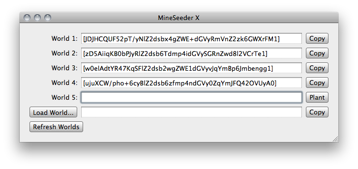

"Have you ever wanted to
Share an amazing natural landscape with a friend?
Prove your ridiculous claim of seeing a naturally occurring Notch statue made of adminium?
Click several buttons and then tick a checkbox?
Well now is your chance, MineSeeder encodes a naturally occurring scene in a short (half-tweet sized) string that you can share on the forum that lead you here." - c0bra51
MineSeeder X is a shameless copy of the original MineSeeder, for all those Mac using Minecraft players who feel like they're missing out on the fun.
 V1.0.1, for OSX 10.5 and 10.6
V1.0.1, for OSX 10.5 and 10.6
You can download the source code in either zip or tar formats.
You can also clone the project with Git by running:
$ git clone git://github.com/Kyrox/MineSeeder-X
Report them on the issues tracker.